Chunlin Tian
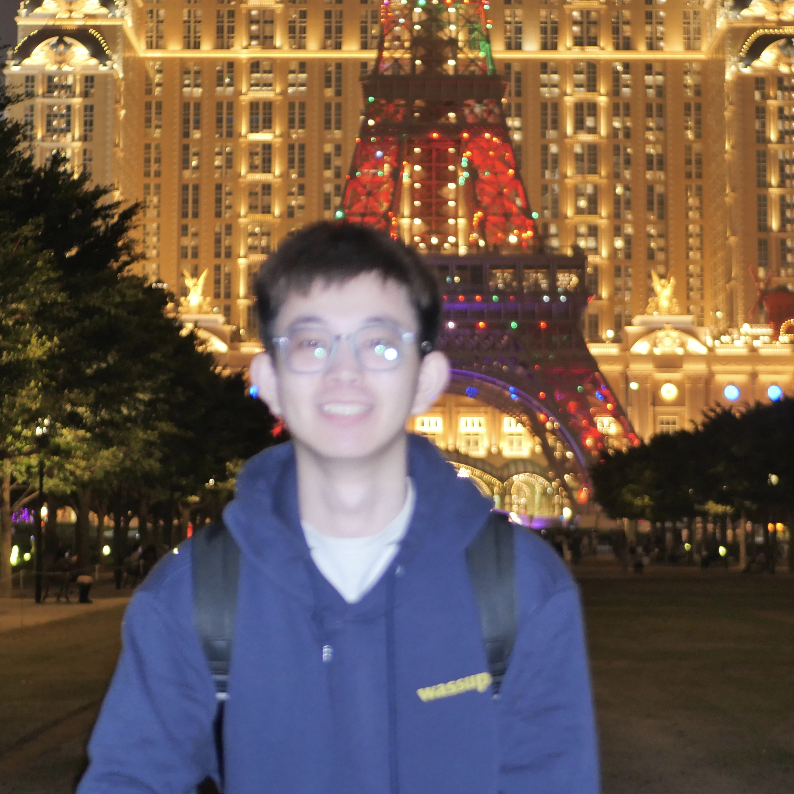
About
I am a final-year Ph.D. candidate in Computer Science at the State Key Laboratory of Internet of Things for Smart City (SKL-IOTSC), University of Macau, advised by Prof. Li Li and Prof. Chengzhong Xu (IEEE Fellow). I am currently a Visiting Researcher at the Machine Learning Systems Group, University of Cambridge, working with Prof. Nicholas D. Lane. I also collaborate with Dr. Zhan Shi and Prof. Zhijiang Guo.
My research focuses on building full-stack edge intelligence systems — spanning algorithms, systems, and hardware — for real-world deployment of foundation models under resource constraints.
- Efficient Foundation Models for Edge Deployment.
- Distributed & Collaborative Edge AI Systems.
- Hardware-Software Co-Design for Real-World AI Applications.
I have published 20+ papers in top-tier journals and conferences, including MICRO, USENIX ATC, TPDS, NeurIPS, and ICML, with several selected for Oral presentations.
News
- 2026.06 One paper (SutureFormer) accepted to MICCAI 2026.
- 2026.04 One paper (EdgeLLM) accepted to ACM SoCC 2026.
- 2026.04 One paper (ChainFed) accepted to ACL 2026.
- 2026.02 One paper (Floe) accepted to IEEE TPDS 2026.
- 2026.01 One survey paper on Federated LLM accepted to TMLR 2026.
Education
-
University of Macau 08/2022 – PresentPh.D. in Computer Science (MPDS awardee)
-
Xi'an Jiaotong University 09/2018 – 06/2022B.Eng. in Internet of Things (Outstanding Graduate)
Selected Publications
For a complete list, please see my Google Scholar profile.
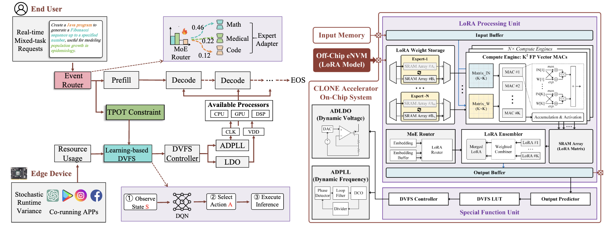
🏆 Highest-cited paper at ATC that year (1/100).
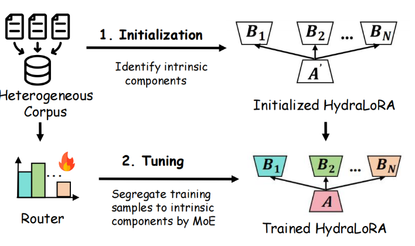
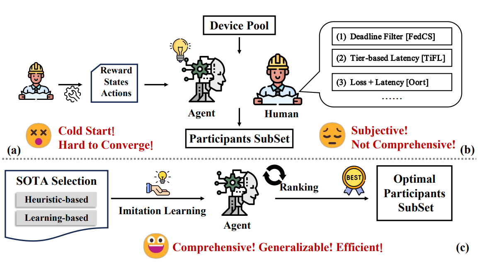
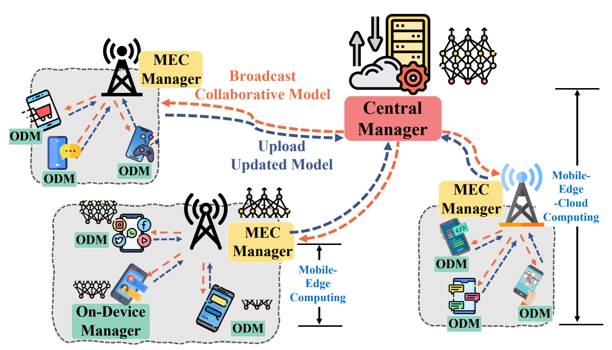
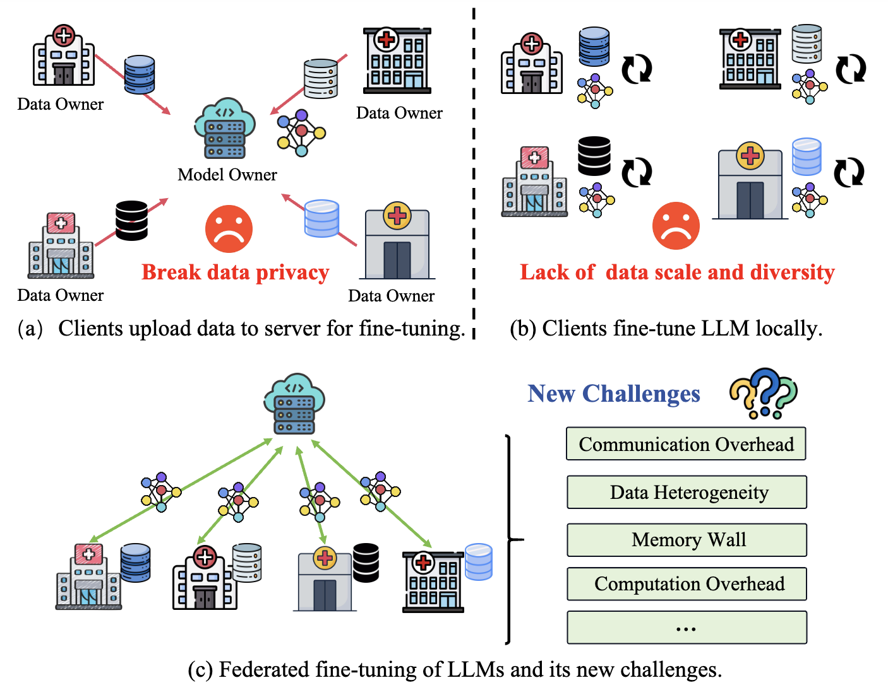
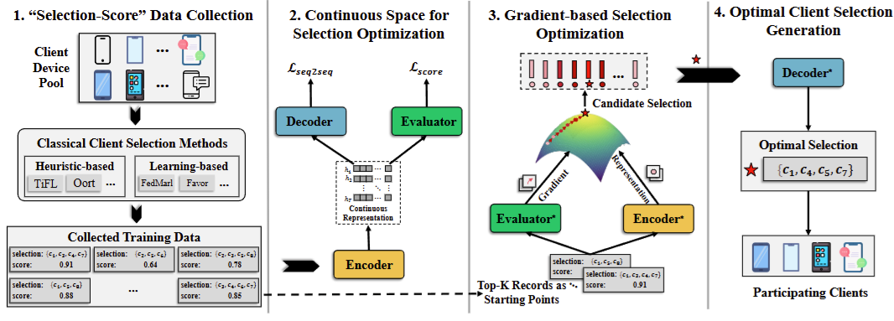
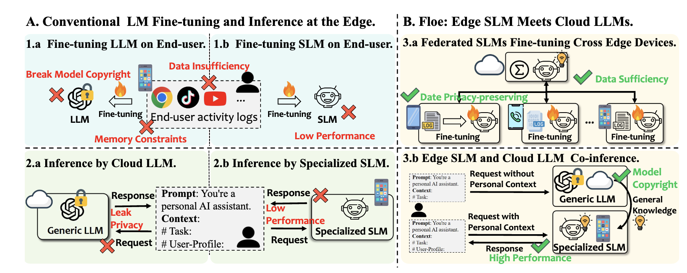
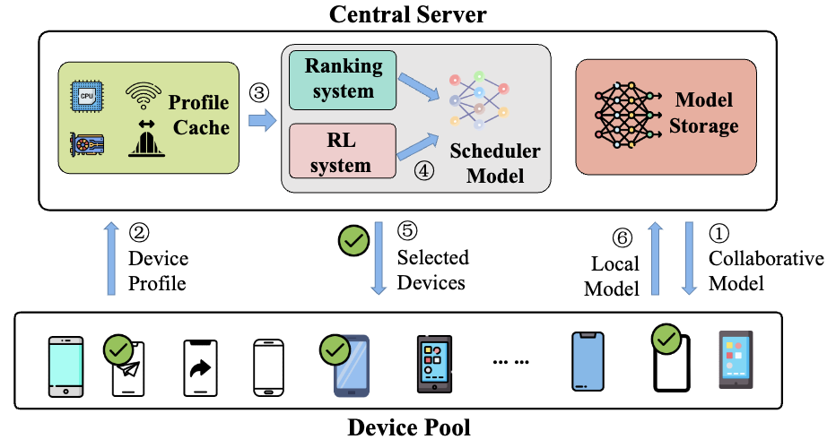
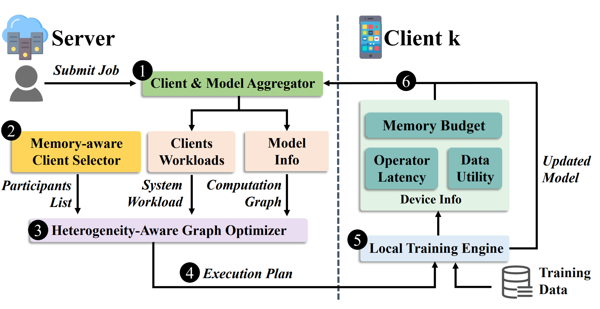
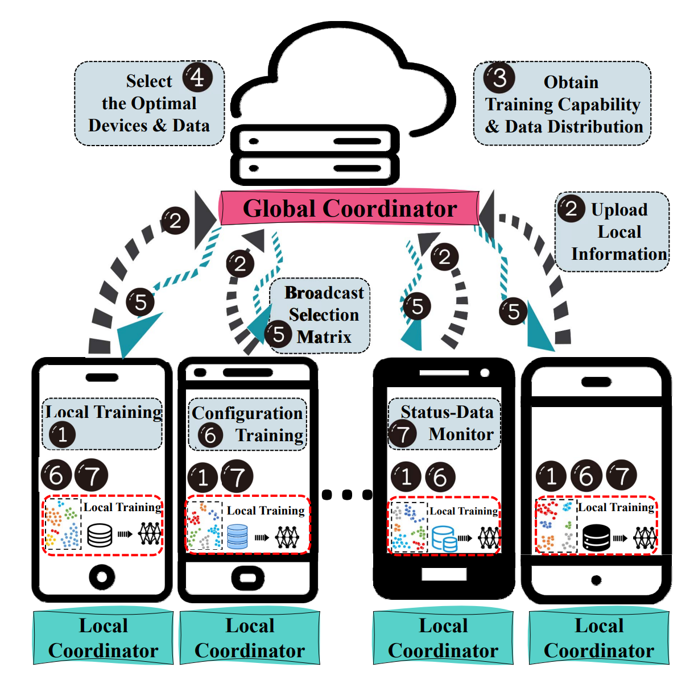
Professional Services
- Conference Reviewer: NeurIPS, ICML, ICLR, CVPR, IJCAI, AAAI, ACM MM.
- Journal Reviewer: IEEE TPDS, TMC, TPAMI, TCAD, TVLSI, TNNLS, TSN, TKDE, TITS, IOTJ; ACM TIST.
- External Reviewer: MICRO, HPCA, ASPLOS.
Mentored Students
If you are passionate about research, I warmly invite you to join us on this academic journey.
- Xinpeng Qin, UESTC (B.S.) → Tsinghua University (M.S.)
- Shuaihang Zhong, UESTC (B.S.) → Nanjing University (M.S.)
- Xuyang Wei, UESTC (B.S.) → UESTC (M.S.)
- Yunqi Li, RPI (B.S.) → UNC (M.S.)
- Shitian Li, UMAC (B.S.) → NUS (M.S.)
Teaching
- CISC7203, Database and Data Mining Technologies, UM (Graduate), Spring 2025.
- CISC7204, Data Science and Data Visualization, UM (Graduate), Fall 2024.
- CISC1001, Programming Science, UM (Undergraduate), Spring 2024.
- CISC2001, Computer Organization, UM (Undergraduate), Fall 2023.
- CISC7303, Cloud Computing, UM (Graduate), Spring 2023.
- CISC2001, Computer Organization, UM (Undergraduate), Fall 2022.